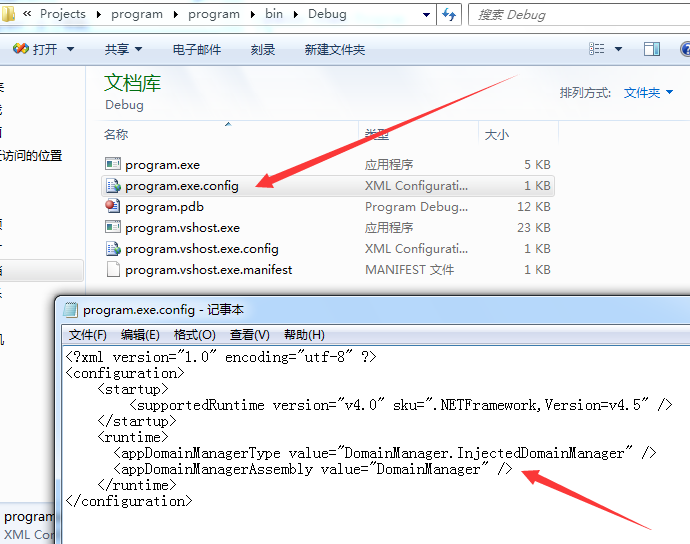

For the Visual Studio c# project, the file App.config exists by default in the project directory, and the content is as follows:
<?xml version="1.0" encoding="utf-8" ?>
<configuration>
<startup>
<supportedRuntime version="v4.0" sku=".NETFramework,Version=v4.5" />
</startup>
</configuration>
If you modify it, add hijacking function, then when compiling the program, it will also modify the default generated config file in the bin directory.
App.config is modified as follows:
<?xml version="1.0" encoding="utf-8" ?>
<configuration>
<startup>
<supportedRuntime version="v4.0" sku=".NETFramework,Version=v4.5" />
</startup>
<runtime>
<appDomainManagerType value="DomainManager.InjectedDomainManager" />
<appDomainManagerAssembly value="DomainManager" />
</runtime>
</configuration>
Compile the program, the config file in the bin directory is also modified, as shown below

If DomainManager.dll is also placed in the bin directory, it will be hijacked when the program starts, as shown below.